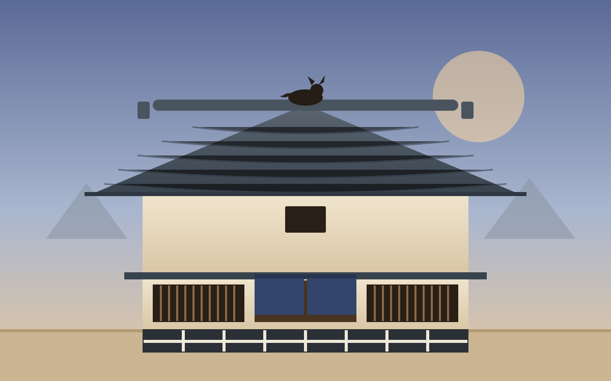

Now open · Lab 04 · 町家
Build a machiya post by post.
Nine townhouse variations. Build the timber frame, study the tiles and lattice, and let Michi climb from the street to the roofs.
Michi-Neko · Labs · 研究所
Every object in Michi's valley gets a lab: a page where you can pull it to pieces, rebuild it one technique at a time and try the variants before the best one goes into the game. Each one starts with ten to fifteen sources of research, and everything is procedural, so there is nothing to download.

Now open · Lab 04 · 町家
Nine townhouse variations. Build the timber frame, study the tiles and lattice, and let Michi climb from the street to the roofs.

Now open · Lab 21 · 座敷
Twelve live Kyoto interiors. Slide the paper screens, take a tatami apart, and let Michi hop onto the furniture.